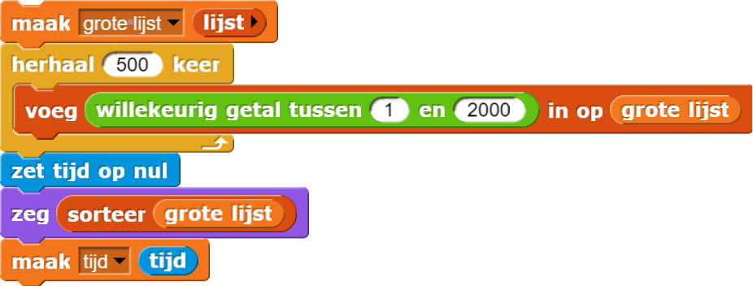

Partition Sort
Een ander beroemd sorteeralgoritme heet Partition Sort. Het werkt zo:
- Stap 1. Selecteer het eerste element in een ongesorteerde lijst (dit is waarschijnlijk niet meer het eerste element na het sorteren). Dit element heet het draaipunt.
-
Een element is "bij het draaipunt" alleen als het dezelfde waarde als het draaipunt heeft.Stap 2. Beslis voor ieder element in de lijst of het voor, na of bij het draaipunt komt.
- Stap 3. Verdeel de data in drie categorieën: elementen voor het draaipunt, bij het draaipunt en na het draaipunt. De lijsten voor en na het draaipunt blijven ongesorteerd.
- Stap 4. Als er elementen voor het draaipunt zijn, gebruik dan Partition Sort om ze te sorteren. Doe hetzelfde voor elementen na het draaipunt.
- Stap 5. De gesorteerde lijst wordt gemaakt door de 3 lijsten te verbinden.
Namen zijn niet gesorteerd voor of na het draaipunt. Voor
, is dit de status na de
eerste splitsing:
het draaipunt is Emma, de lijst voor het draaipunt is {Ava,
Abigail} en de lijst na het draaipunt is {Olivia, Sophia, Isabella, Mia, Emily}. Het
sorteerproces gaat door voor deze twee kleinere lijsten.
- Probeer eerst Partition Sort helemaal te snappen voordat je code gaat schrijven. Sta op en vorm een lijn met je klas. Volg daarna het algoritme van Partition Sort om iedereen te sorteren op naam.
- Waarom is Partition Sort een voorbeeld van recursie? Wat is het basisgeval?
Om een Partition Sortblok in Snap! te schrijven heb je code nodig voor het basisgeval
en code die Partition Sort volgt.
-

Bekijk dit nieuwe project dat hetverbindblok bevat (in het Variabelenmenu). - Beschrijf wat het
verbindblok doet. -
Je moet uitvogelen hoe je elementen in drie categorieën plaatst en hoe je de uiteindelijke lijst maakt die je rapporteert.Bouw de recursieve rapporteur
Partition Sort. De uitvoer hiervan moet gelijk zijn aan die vanSelection Sort.
Laat een voorbeeld zien.
Stel dat je gisteren een grote gesorteerde lijst had en vandaag een paar nieuwe elementen toevoegt. Je
moet nu de lijst hersorteren. Een algemeent sorteeralgoritme zal geen voordeel hebben aan het feit dat
de lijst al bijna helemaal gesorteerd is. Maar Insertion Sort, een sorteeralgoritme dat over
het algemeen heel langzaam is, is juist heel goed in dit speciale geval.
Waarom zijn er verschillende sorteeralgoritmes? Sommige sorteeralgoritmes doen er langer over dan andere, maar zelfs een algoritme dat over het algemeen langzaam is, kan soms heel snel zijn.
-
Je kan hier ook een lange lijst van namen gebruiken.Maak een lijst met 500 willekeurige getallen en sorteer de lijst met de drie verschillende sorteeralgoritmes die je deze Les gemaakt hebt. Houd bij hoe lang ze erover doen:
 - Wat was het snelste algoritme? Waarom zou dit algoritme het snelst zijn geweest?